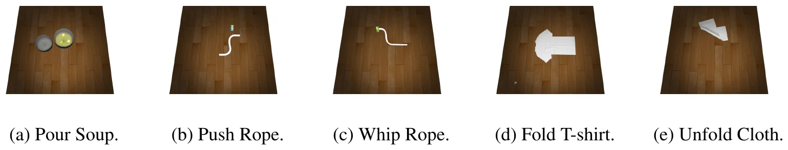
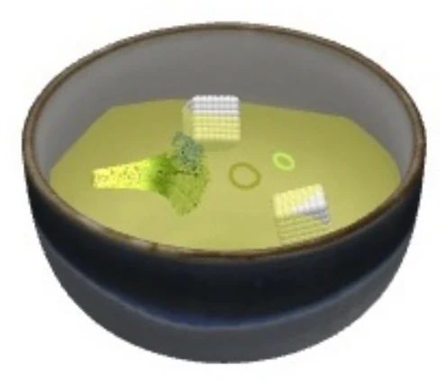
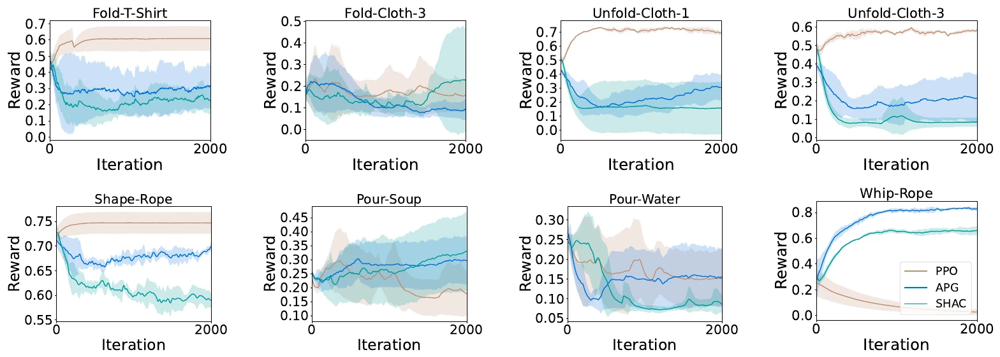
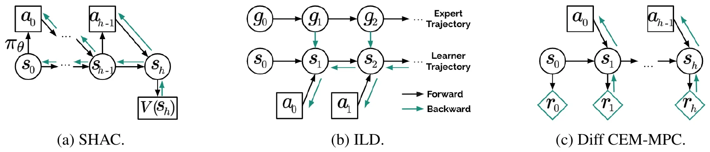
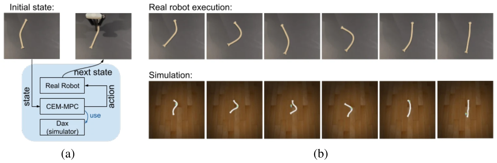
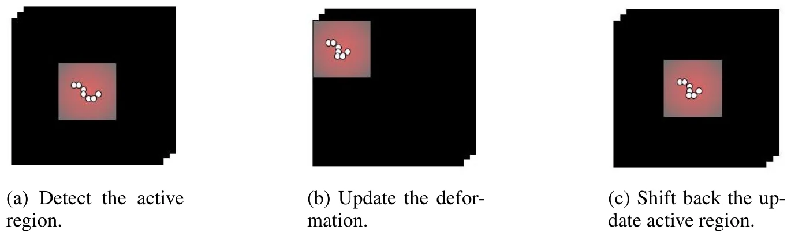

arXiv 2210.13066 · cs.RO · v2 2023 年 3 月 10 日 · ICLR 2023 oral · 中文精读
DaXBench: Benchmarking Deformable Object Manipulation with Differentiable Physics
作者 Siwei Chen†、Yiqing Xu†、Cunjun Yu†、Linfeng Li、Xiao Ma、Zhongwen Xu、David Hsu（† 共同一作），新加坡国立大学；Xiao Ma、Zhongwen Xu 来自 Sea AI Lab。
关于这份精读。这篇论文在 arXiv 上以 CC BY 4.0 发布（2026-11-21 查摘要页）。我读的是 v2（2023-03-10，页眉写“Published as a conference paper at ICLR 2023”）。PDF 每页页脚只有页码，侧边是 arXiv 编号，没有和 CC BY 矛盾的版权声明。这里按原文顺序覆盖摘要、正文五节、致谢后的伦理与可复现声明，以及附录 A 到 D；小节编号和原文一致，用自己的话整理，不是逐字翻译。原文没有编号公式，§4.1 的两个奖励式子我照原文写出，不编号；另有几处代码里的式子，标了“代码”。
图 1 到图 6 从 arXiv PDF 裁切（pdftoppm 渲染，图 1 用 600 dpi，其余 280 dpi），只做了裁切、缩放和格式转换，没有改内容；版权归作者，裁切件按 CC BY 4.0 使用，署名 Chen 等。图下的文字是我写的。表 1 到表 5 是照录原文数字；“图 3 矢量读数”表是我从 PDF 的矢量路径读出来的（pdftocairo -svg 导出，按每格的刻度线标定），标了“矢量读数”，误差约 ±0.005。“读者注”是整理时核算或对照发现的，不属于论文内容，页尾有汇总。
代码。官方代码 AdaCompNUS/DaXBench，根目录 LICENSE 是 Apache-2.0。我读的是最新提交 bc73c58（2023-11-01），只读，没有运行。代码 2023-05-02 才首次发布（晚于论文），PPO 和 SHAC 是 2023-10-30 加的。仓库里的许可信息不统一：setup.py 写 BSD-2-Clause，文档 conf.py 写“All Rights Reserved”，SHAC 目录和 core/utils/ 下有 6 个文件带 NVIDIA“未经许可禁止分发”的文件头（来自 DiffRL）。所以我对 Apache 文件只引很短的片段，对带 NVIDIA 文件头的文件只引文件名、行号和配置键（读者注 21）。路径省略前缀 daxbench/。
可变形物体操作（deformable object manipulation，DOM）的难点在于状态和动作的维度都很高。可微物理把物理规律写成可求导的计算图，能直接给出“回报对动作的梯度”，有望提高样本效率。但已有的可微仿真器大多只管一类物体（例如 PlasticineLab 只有弹塑性体），已有的通用基准（例如 SoftGym）又不可微。这篇论文给出 DaXBench：
读完我认为最值得记住的四点：

和 SHAC。DaXBench 确实把 SHAC 和 APG 当作可微强化学习的基线（§1、§4.2，表 2）。SHAC 原文的要点是“短窗口 + 末端价值”：每个窗口只反传 \(h\) 步（默认 32），窗口末端接一个评论家 \(V(s_h)\)（见 SHAC 页 §3.3 式 (5)）。APG（analytic policy gradient）来自 Brax，是整条回合直接反传。本文有两处和 SHAC 原文对不上：一是 §4.3 说“SHAC 的梯度只计当前步的奖励”，而 SHAC 式 (5) 是窗口内所有奖励加末端价值（读者注 8）；二是发布的 SHAC 把窗口设成整个回合，等于没有“短视野”（读者注 18）。所以本文图 3 里的“SHAC 不如 PPO”，不能直接读成“SHAC 的短视野设计在可变形物体上不行”。
和 SuperMimic。APG 和 SHAC 都是 BPTT（随时间反向传播），只是穿过的是真可微仿真器，不是学到的世界模型。SuperMimic 页的 问 1 讲了 BPTT 的展开结构，问 8 讲了窗口长度和评论家怎样分担折扣回报。本文的 APG 默认展开 10 步，SHAC 展开整个回合，都没有用到窗口外的评论家。
| 本文的 APG（代码） | 本文的 SHAC（代码） | SHAC 原文 | SuperMimic | |
|---|---|---|---|---|
| 梯度穿过什么 | DaX 可微仿真 | DaX 可微仿真 | dFlex 可微仿真 | 学到的世界模型 |
| 展开长度 | --ep_len，默认 10 | 任务的 max_steps（整个回合） | \(h=32\) | 32 步 |
| 窗口末端 | 无 | 有评论家，但最后一步被清零 | \(\gamma^h V(s_h)\) | 评论家 |
| 梯度处理 | 每个仿真步归一化 + 全局裁剪 0.3 | 同左 + 裁剪 0.3 | 全局裁剪 1.0 | 见该页 |
和 RGBench。RGBench 是评测布料模拟器的基准：把真机动作在仿真里回放，和真实点云比倒角距离；它的相关工作里也提到了 DaXBench。DaXBench 是评测操作算法的基准，布料模型很简单：16 × 32 个质点、每个质点连 8 个邻居，没有弯曲弹簧，也没有自碰撞（读者注 14）。按 RGBench 那种标准，DaXBench 的布料保真度没有被评测过；本文只对推绳做了一次真机对照（§4.5）。
和 PhysTwin。两者都用质点-弹簧、都靠可微仿真求梯度。区别在用途：PhysTwin 用梯度从视频里辨识每根弹簧的刚度（系统辨识）；DaXBench 用梯度优化动作或策略。§4.5 提到 DaX 的可微性“能用于系统辨识”，但论文和代码都没有做（exp/calibrate.py 只是把一次推绳的仿真和真机结果画在一起，读者注 20）。弹簧力的写法也不同：PhysTwin 是 \(k(\lVert d\rVert-l)\)，DaX 按应变 \(k(\lVert d\rVert-l)/l\)。
同组作者的 DiffMimic。Siwei Chen 也参与了这篇同样基于可微物理的工作。具体内容见那一页。
可变形物体操作在家庭和工业里都有用。已经有一些基于可变形物体仿真器的基准（SoftGym、PlasticineLab），但高维的状态和动作空间仍是主要困难。
可微物理把物理规律实现为可微的计算图（Brax、DiffTaichi），能用解析梯度优化控制策略，提高样本效率。已有研究显示基于可微物理的 DOM 方法受益明显（PlasticineLab、DiSECt、SHAC、ILD）。为了公平比较，需要一个能容纳这些方法的通用仿真平台。
本文提出 DaXBench。和单任务的基准不同，它覆盖绳子、布料、液体和弹塑性材料，任务难度不一、奖励定义清楚（倒液体、叠布、作者这里写的是“rope wiping”，见读者注 3）。任务同时支持高层宏动作和低层控制，可以评测不同动作空间的方法。
作者评测了 8 个方法：规划有 CEM-MPC、可微 MPC 以及两者结合；强化学习有不可微的 PPO 和用解析梯度的 SHAC、APG；模仿学习有不可微的 Transporter 和用可微物理的 ILD。每个任务都对比有梯度和没梯度的算法。
仿真器 DaX 把近年的可变形物体仿真算法（SHAC、ILD 里用的）和 JAX 结合，能高效地自动求导，并在多张 GPU 上并行。所有任务都包成 OpenAI Gym 的接口。实验还表明，DaX 的动力学可以直接迁移到真机做推绳。
SoftGym 是第一个同时建模液体、布料和弹塑性体的 DOM 基准，有一套标准任务。ThreeDWorld 支持在丰富的 3D 环境里和各种物体交互，但不可微。可微的 DOM 仿真器有 ChainQueen、Diff-PDE、PlasticineLab、DiSECt、DiffSim，但每个只擅长一类物体、少数任务。例如 PlasticineLab 和 DiSECt 只建模弹塑性体（雕塑、擀、切）。各类物体的动力学差别很大，专门为一类写的引擎很难扩展到另一类。DaXBench 想补上这一空缺，提供一个覆盖多类物体、特别适合比较可微方法的平台。
| 引擎 | 应用 | 可微 | 并行 | ||||
|---|---|---|---|---|---|---|---|
| 液体 | 布料 | 弹塑性 | 混合 | 每进程仿真数 | 多卡训练 | ||
| PlasticineLab | ✗ | ✗ | ✓ | ✗ | ✓ | 单个 | ✗ |
| DiSECt | ✗ | ✗ | ✓ | ✗ | ✓ | 单个 | ✗ |
| DiffSim | ✗ | ✓ | ✗ | ✗ | ✓ | 单个 | ✗ |
| SoftGym | ✓ | ✓ | ✗ | ✗ | ✗ | 单个 | ✗ |
| DaXBench | ✓ | ✓ | ✓ | ✓ | ✓ | 多个 | ✓ |
§3.2 开头说任务包括“sculpting elastoplastic objects”，但 §3.2.1–3.2.3 只列了液体、绳子、布料三组，实验也没有雕塑任务。代码里确实有弹塑性材料：MPM 的材料编号 2 会把形变梯度的奇异值截到 [0.75, 1.45]（core/engine/mpm_simulator.py:250，1 − 2.5e-2×10 和 1 + 4.5e-3×100）。推绳的绳子用的就是材料 2（core/envs/shape_rope_env.py:168），而甩绳的绳子、汤里的豆腐和蔬菜用材料 1（纯弹性，whip_rope_env.py:127、pour_soup_env.py:132, 137, 164）。仓库里有一个 shape_elasto_plastic.py（0.2 × 0.06 × 0.12 的块），但类名写成了 ShapeRopeEnv，也没有注册进 core/envs/registration.py。所以表 1 “弹塑性 ✓”说的是引擎能力；“混合 ✓”对应倒汤（水 + 弹性块），这两格在代码里都能找到。表 1 里其他仿真器那几行，我没有和各自的原文核对，未核实。
刚体操作的方法很难直接搬到 DOM 上：DOM 的方法必须处理状态空间的大量自由度和复杂动力学。按范式分三类：规划、模仿学习、强化学习。这里只讨论面向标准任务的通用方法。
强化学习。也有用可微物理的强化学习，如 SHAC 和 APG。它们用动力学的真梯度直接优化局部动作，绕开策略梯度估计所需的大量采样。
模仿学习。为了克服“历史的诅咒”，Transporter 等工作学习低维潜空间，并把动作简化成拾放。ILD 是另一条路：利用可微动力学一次匹配整条轨迹，降低了对状态覆盖的要求。
规划。一系列工作学习低维潜状态和对应的动力学模型，在潜空间里规划。成败关键取决于潜空间和动力学模型的质量，而学好它们本身就难。
作者认为，一个带可微仿真器的通用框架能帮研究者看清现有 DOM 方法的进展和局限。
DaXBench 是一个通用的可微 DOM 仿真平台。为了能评测各类方法、尤其是可微方法，作者自己写了仿真器 DaX（Deformable-and-JAX），高效且可并行。本节先简述 DaX，再介绍任务。
DaX 用 JAX 实现，并行度高，自动微分直接在 GPU 内核层面优化。它能和大量用 JAX 写的学习算法无缝连接，整张计算图端到端并行。和其他仿真器的比较见表 1。

状态表示和动力学模型。不同物体的形变方式不同，DaX 用不同的表示和动力学：液体和绳子形变大，用粒子表示，动力学用移动最小二乘物质点法（MLS-MPM，Hu 等 2018；Sulsky 等 1994）。布料形变有限，用网格表示，动力学用更便宜的质点-弹簧系统。这样在建模能力和计算量之间取得平衡。细节见附录 A.1。
可定制。可以在现有框架上新建任务，加入任意形状、不同硬度的物体，也可以自定义原语动作。代码示例在附录 A.2。
省内存。DaX 用两个办法降低端到端求梯度的时间和显存：惰性动力学更新，每步只更新受操作影响的一小块区域；检查点（Qiao 等 2021；Chen 等 2016；Griewank & Walther 2000），前向只存少数状态，反传时从每个存下的状态出发倒序重算各段前向。细节见附录 A.4。
代码里的两个仿真器（core/engine/mpm_simulator.py、core/engine/cloth_simulator.py）我逐行读过，写成式子是下面这样（代码，论文没有给公式）。MPM 每个子步：粒子到网格（P2G，二次 B 样条，每个粒子 27 个网格点）、网格上加重力和碰撞、网格到粒子（G2P）。应力用固定共旋（fixed corotated）模型（mpm_simulator.py:265-267）：
液体把 \(\mu\) 置 0、\(\lambda\) 置 1，只剩体积项（:243-244）；弹塑性体先把 \(\boldsymbol\Sigma\) 截到 [0.75, 1.45] 再重组 \(\boldsymbol F\)。布料每个质点和 8 个邻居连弹簧（上下左右 + 对角，cloth_simulator.py:48），弹簧力按应变算（:267-268）：
之后加重力、地面库仑摩擦，速度乘 \(e^{-c\,\Delta t}\) 阻尼，再处理夹爪，显式欧拉积分。叠布用 \(k=900\)、\(c=2\)、\(\Delta t=2\times10^{-3}\)（fold_cloth3_env.py:20-28）。
DaXBench 提供一组有代表性的 DOM 任务，包括倒液体、“rope wiping”、叠布和雕塑弹塑性体（图 2）。作者还提出几个更长视野、需要更细控制的新任务，用来测试方法的可扩展性。每个任务的视野按人类专家完成它需要的步数定。
长视野任务。基于搜索的规划方法，时间复杂度随规划视野指数增长（“历史的诅咒”），可变形物体的大状态空间让这更严重。已有 DOM 基准的视野偏短，例如 SoftGym 的叠布和展开只有 1 到 3 步。DaXBench 提供更长的任务，以便评测规划方法的可扩展性。
没有宏动作的任务。宏动作可以看成把原始动作执行多步。例如拾放或推可以定义成 6 维实向量 \((x,y,z,x',y',z')\)，表示夹爪起点和终点；原始动作是夹爪的笛卡尔速度。宏动作降低了动作维数和有效视野，所以更容易扩展。但对有些任务它太粗：比如甩绳打到目标位置，整个过程都要以较高频率调整动量。DaXBench 特意包含这类任务。
Pour-Water（倒水）：尽快把一碗水倒进目标碗。智能体直接控制握碗夹爪的速度和转动，动作是 4 维 \(a=(v_x,v_y,v_z,w)\)：线速度加绕手腕的角速度。
Pour-Soup（倒汤）：尽快把一碗带各种固体配料的汤倒进目标碗，动作同上。比倒水难：液体和固体之间有相互作用，一块配料倒出去时，智能体要及时反应：一是夹爪负载突然变小，二是控制配料落到汤面时的动量，少溅出来。
两个任务都没有合适的宏动作，视野都是 100 步。
Push-Rope（推绳）：尽快把绳子推成预定形状。绳子初始构型随机，单个夹爪执行推的宏动作。视野 6 步。
Whip-Rope（甩绳）：把绳子甩成目标构型。智能体握住绳子一端，控制夹爪速度，动作是 3 维 \(a=(v_x,v_y,v_z)\)。动量和形变要高频调整，宏动作做不了。视野 70 步。
Fold-Cloth（叠布）：把一块平铺的布叠好并移到目标位置。简单版叠 1 次，难版叠 3 次。开始时布平铺在桌面任意位置，执行拾放宏动作。视野简单版 3、难版 4。
Fold-T-shirt（叠 T 恤）：把 T 恤叠到目标位置，开始时平铺在任意位置，拾放宏动作，视野 4。
Unfold-Cloth（展开布）：尽快把折起来的布在目标位置铺平。两个版本的区别是初始折了 1 次还是 3 次。动作同叠布，两个版本视野都是 10 步。
所有任务的接口都类似 OpenAI Gym 的标准环境。作者提供一个通用模板来定义任务，模板里的变量和常量都有物理含义，便于理解、开发和调试。
| 任务（注册名） | 物体与表示（代码） | 动作：论文 / 代码 | 视野：论文 / 代码 | 每步仿真 |
|---|---|---|---|---|
| Pour-Water（pour_water） | MPM，水 702 粒子，网格 80³ 的活动区 26×20×26 | 4 维 / 6 维，第 2 维 \(v_y\) 被置 0，角速度用第 4 维 | 100 / 100 | 23 个子步 × 3e-4 s |
| Pour-Soup（pour_soup） | MPM，水 + 2 块豆腐 + 蔬菜，7631 粒子，128 网格 | 同上 | 100 / 120 | 25 × 4e-4 s |
| Push-Rope（shape_rope / push_rope） | MPM 弹塑性，目标 582 粒子，活动区 64×6×64 | 推：6 维起止点 / 同，y 固定 0.01，推距上限 0.3 | 6 / 6 | 30 段 × 133 子步 × 5e-5 s |
| Whip-Rope（whip_rope） | MPM 弹性，67 粒子，64 网格 | 3 维 / 6 维，后 3 维置 0；速度 ÷ 50，位置控制 | 70 / 70 | 70 × 1e-4 s |
| Fold-Cloth-1（fold_cloth1） | 质点-弹簧 16×32 = 512 质点 | 拾放：6 维 / 同，y 置 0 | 3 / 3 | 40 段 × 50 子步 × 2e-3 s |
| Fold-Cloth-3（fold_cloth3） | 同上（和 1 只差目标文件） | 同上 | 4 / 4 | 同上 |
| Fold-T-shirt（fold_tshirt） | 按图片掩码生成，3573 质点，k = 5000 | 同上 | 4 / 5 | 40 × 50 × 5e-4 s |
| Unfold-Cloth-1（unfold_cloth1） | 512 质点，随机拾放 1 次作初始 | 同上 | 10 / 15 | 40 × 50 × 2e-3 s |
| Unfold-Cloth-3（unfold_cloth3） | 512 质点，随机拾放 3 次作初始 | 同上 | 10 / 15 | 同上 |
代码的 max_steps：fold_cloth_tshirt_env.py:48 是 5（论文 4）；unfold_cloth1_env.py:44、unfold_cloth3_env.py:44 都是 15（论文 10）；pour_soup_env.py:68 默认 120（论文 100）。其余 5 个一致。还有两点：Fold-Cloth-1 和 Fold-Cloth-3 的环境类除了目标文件以外完全一样（布的掩码、参数、视野之外的一切），“叠 1 次”和“叠 3 次”只由目标点云决定；推绳的注册名在代码里叫 shape_rope，push_rope 是别名。论文的视野“按人类专家的步数定”，但发布的专家示范里每条有几步，我没有加载 pickle 去数（不加载不受信的 pickle），未核实。
MPM 和布料环境的 action_size 都是 6（basic/mpm_env.py:30、basic/cloth_env.py:39）。倒水 / 倒汤：动作进 get_primitive_actions 后除以 500，第 2 维 \(v_y\) 被强制置 0（pour_water_env.py:85-88），所以碗不能上下移动；转动用第 4 维，即绕 x 轴的角速度（手工示范按 shift / tab 就是改第 4 维，:159-162）。论文写的 \((v_x,v_y,v_z,w)\) 里 \(v_y\) 实际不起作用。甩绳：后 3 维置 0、除以 50，并开了 use_position_control，夹爪附近 1.5 倍尺寸内的网格速度直接设成夹爪速度（primitives.py:232-239），和论文“3 维速度”一致。拾放：6 维被展开成 40 段子动作，下降 3 段、抬起 0.06 共 10 段、平移 20 段、松开 7 段（cloth_env.py:145-168），拾取高度被置 0。cloth_env.py:51 另外声明了一个 8 维的 action_space，没有被用到。
自己画的 · 11 幕 3D 框架动画
总览、JAX 批量与梯度、MPM 一个子步、布料质点-弹簧和拾放宏动作、省内存的两个办法、9 个任务的动作和视野、奖励怎么算、三类方法的梯度路径（APG / SHAC / ILD / 可微 MPC）、为什么可微方法会卡住（玩具）、结果表与图 3 读数、推绳的仿真到真机。可以暂停、拖进度、旋转画面、切换开关。玩具数字是当场算的，都标了“玩具”。
本节回答两个问题：现有代表性方法能否解决 DaXBench 的任务？在每个范式里，可微仿真器有没有帮助？作者评测 8 个方法，覆盖规划、模仿学习和强化学习。各范式对输入知识的假设不同，汇总在表 2。
| 范式 | 强化学习 | 模仿学习 | 规划 | |||||
|---|---|---|---|---|---|---|---|---|
| 方法 | PPO | SHAC | APG | Transporter | ILD | CEM-MPC | diff-MPC | diff-CEM-MPC |
| 专家示范数 | — | — | — | 10 | 1 | — | — | — |
| 奖励函数 | ✓ | ✓ | ✓ | — | — | ✓ | ✓ | ✓ |
| 可微 | ✗ | ✓ | ✓ | ✗ | ✓ | ✗ | ✓ | ✓ |
奖励函数。每个任务的目标由一组粒子的期望终点位置 \(g\) 给出。奖励按当前粒子和目标粒子的接近程度定义。真实奖励：
其中 \(s'\) 是在 \(s\) 执行 \(a\) 后的下一状态，\(D(s,g)\) 是物体粒子和目标粒子位置之间的非负距离。
只用真实奖励学得慢：末端执行器只有接触到物体才能改变它。所以加一个鼓励接触的辅助奖励：
\(L_2(s,a)\) 是末端执行器到物体的 L2 距离。训练时用 \(r_{gt}+r_{aux}\)，评测时只用 \(r_{gt}\)。
λ。论文没给，代码是 10（basic/mpm_env.py:93、basic/cloth_env.py:223）。D。MPM 任务用 calc_l2（core/utils/util.py:156-159）：按粒子编号一一对应，先在 xyz 三个坐标上取均方再开方，再对粒子取平均，等于平均欧氏距离除以 √3。粒子数和目标不同时，目标点被有放回地随机重采样到相同数量（mpm_env.py:200-204），之后的“一一对应”是随机的。布料用双向倒角距离（util.py:138-153），同样除了 √3。r_aux。代码算的是“动作的前 3 维到最近粒子的距离”（mpm_env.py:131-135、cloth_env.py:206-209），不是论文说的“末端执行器到物体”。对拾放和推，前 3 维正是拾取 / 起推点，意思一样；对倒水、倒汤、甩绳，前 3 维是速度，这个距离没有物理意义（我的读法）。折扣。布料奖励还乘了 \(0.99^{t}\)（cloth_env.py:228），评测时也乘，论文没写。评测只用 r_gt。APG 和 SHAC 的评测环境确实不带 aux_reward（apg.py:94、shac.py:60-61），和论文一致。
方法。PPO 是广泛使用的无模型、不可微强化学习方法；SHAC 和 APG 是利用可微仿真器的两个最新方法。SHAC 的计算图见图 4a。比较三者，研究可微物理用于强化学习的好处和局限。

总体表现。PPO 和可微强化学习的差距在高层宏动作任务和低层控制任务上方向相反。出乎作者意料，在大多数短视野的宏动作任务上，PPO 一直比可微方法好。这似乎和 SHAC 原文相反（SHAC 在自己的仿真器、一系列 MuJoCo 任务上强于 PPO）。但在长视野的低层控制任务上，可微方法，尤其是 APG，大幅超过 PPO。
可微强化学习的主要困难：探索。作者认为，在高层宏动作任务上，限制可微强化学习的主要因素是训练中缺乏探索。DOM 的大量自由度和复杂动力学放大了探索与利用之间的权衡。宏动作任务的优化地形不光滑、不连续、非凸，需要好的探索策略；而现有可微强化学习只靠仿真梯度优化策略，没有熵正则，容易很快塌到局部最优。以 Fold-Cloth-3 为例：如果随机初始化的策略从来没碰到布，局部梯度就无法引导它去碰，因为所有不接触的动作奖励都是零，梯度也是零。
可微强化学习对优化地形敏感。如果地形光滑、接近凸，可微方法能大幅提升低层控制任务。以 Whip-Rope 为例，最优的低层控制序列是一条光滑的运动轨迹，落在梯度方法容易处理的平滑区域，这解释了 APG 为什么大幅超过 PPO。
| 任务 | PPO | APG | SHAC | |||||||||
|---|---|---|---|---|---|---|---|---|---|---|---|---|
| 起点 | 终点 | 最高 | 表 4 | 起点 | 终点 | 最高 | 表 4 | 起点 | 终点 | 最高 | 表 4 | |
| Fold-T-Shirt | 0.46 | 0.61 | 0.61 | 0.61 | 0.47 | 0.32 | 0.47 | 0.40 | 0.43 | 0.23 | 0.45 | 0.44 |
| Fold-Cloth-3 | 0.18 | 0.16 | 0.23 | 0.21 | 0.16 | 0.09 | 0.22 | 0.19 | 0.16 | 0.23 | 0.23 | 0.22 |
| Unfold-Cloth-1 | 0.49 | 0.70 | 0.73 | 0.72 | 0.42 | 0.30 | 0.42 | 0.42 | 0.50 | 0.16 | 0.50 | 0.50 |
| Unfold-Cloth-3 | 0.48 | 0.58 | 0.59 | 0.56 | 0.39 | 0.22 | 0.39 | 0.39 | 0.48 | 0.09 | 0.48 | 0.48 |
| Shape-Rope | 0.72 | 0.75 | 0.75 | 0.75 | 0.71 | 0.70 | 0.71 | 0.72 | 0.73 | 0.59 | 0.73 | 0.75 |
| Pour-Soup | 0.23 | 0.18 | 0.30 | 0.27 | 0.25 | 0.30 | 0.30 | 0.27 | 0.26 | 0.33 | 0.33 | 0.32 |
| Pour-Water | 0.27 | 0.16 | 0.27 | 0.27 | 0.27 | 0.15 | 0.27 | 0.27 | 0.24 | 0.09 | 0.25 | 0.28 |
| Whip-Rope | 0.25 | 0.03 | 0.25 | 0.25 | 0.27 | 0.83 | 0.84 | 0.83 | 0.30 | 0.66 | 0.66 | 0.66 |
橙色是可微方法终点低于起点 0.05 以上的格子。
附录 C 说表 4 “报告图 3 学习曲线的最终表现”。我把 8 格 24 条曲线逐条读出（每格用自己的刻度线做线性标定，残差为 0），和表 4 比：|表 4 − 终点| ≤ 0.02 的只有 6 / 24（PPO 的 T 恤、推绳；APG、SHAC 的甩绳；SHAC 的 Fold-Cloth-3、倒汤）；|表 4 − 曲线最高点| ≤ 0.02 的有 16 / 24。差得最多的：SHAC Unfold-Cloth-3 表 4 0.48，终点 0.09（起点和最高点都是 0.48）；SHAC Unfold-Cloth-1 表 4 0.50，终点 0.16；PPO Whip-Rope 表 4 0.25，终点 0.03（0.25 是它的起点）。也有和最高点也对不上的，例如 APG T 恤表 4 0.40、最高 0.47、终点 0.32；SHAC 推绳表 4 0.75、最高 0.73。我的推断：表 4 多数格子取的是训练过程中最好的一次评测（相当于选最好的检查点），少数格子来源不明。曲线是均值并可能做过平滑，单个种子的最好值可以高于均值曲线的最高点，所以这个推断未核实。
上表里，终点比起点低 0.05 以上的：APG 5 格（T 恤 0.47→0.32、Fold-Cloth-3 0.16→0.09、Unfold-1 0.42→0.30、Unfold-3 0.39→0.22、倒水 0.27→0.15），SHAC 5 格（T 恤 0.43→0.23、Unfold-1 0.50→0.16、Unfold-3 0.48→0.09、推绳 0.73→0.59、倒水 0.24→0.09）。SHAC 只在 Fold-Cloth-3、倒汤、甩绳上升。PPO 也在倒水（0.27→0.16）、倒汤（0.23→0.18）、甩绳（0.25→0.03）上下降。正文用“缺少探索、塌到局部最优”解释宏动作任务，但“塌到局部最优”应当是停在起点附近，不会持续变差。一个可能的原因是训练优化的是 \(r_{gt}+r_{aux}\)，评测只看 \(r_{gt}\)（§4.1）：策略可能学会了贴近物体拿 \(r_{aux}\)，却破坏了构型。另一个可能是读者注 15 的梯度归一化让更新方向失真。这两条都是我的推断，论文没有讨论下降。
“大多数短视野宏动作任务上 PPO 一直更好”：6 个宏动作任务里 PPO 严格领先 4 个（Fold-Cloth-1 0.40 对 0.36 / 0.34、T 恤、Unfold-1、Unfold-3）；Fold-Cloth-3 上 SHAC 0.22 高于 PPO 0.21；推绳 PPO 和 SHAC 同为 0.75。“大多数”成立，“一直”不成立。“长视野低层任务上可微方法、尤其 APG 大幅超过 PPO”：3 个低层任务里只有甩绳成立（0.83 对 0.25）。倒水 PPO 0.27、APG 0.27、SHAC 0.28；倒汤 PPO 0.27、APG 0.27、SHAC 0.32，APG 和 PPO 打平。按图 3 终点看，倒水上 PPO 0.16、APG 0.15、SHAC 0.09。所以这句结论实际只由甩绳一个任务支撑。
推绳：§3.2.2 和图 2 叫 Push-Rope，图 3 叫 Shape-Rope，表 4 叫 Rope Push，代码叫 shape_rope。甩绳：§3.2.2 叫 Whip-Rope，表 4 写成 “Wipe Rope”，§1 和 §3.2 开头的 “rope wiping” 应该也是同一个任务（全文没有“擦”的任务；README 抄了同一句）。图 3 只有 8 格，缺 Fold-Cloth-1，但表 4 有它的数（0.40 / 0.36 / 0.34），所以这一行无法和曲线核对。
图 3 注：5 个种子，每个种子 20 次展开，报告均值和方差。表 4 注：20 个随机种子的均值和标准误。可复现声明（第 10 页）：模仿学习和规划是 20 次随机展开的平均，强化学习用 100 次展开。5 × 20 = 100，和可复现声明一致，表 4 的“20 个种子”和另外两处不一致。代码里 APG 评测 20 个并行环境（apg.py:44），SHAC 的评测环境数等于训练环境数，默认 16（shac.py:60-61, 703）。表 3、表 5 注都说“20 个种子的均值和标准误”；表 5 注还照抄了表 3 的“规划和模仿学习方法”，但表 5 只有模仿学习。
方法。Transporter 实现简单、表现好，是流行的 DOM 方法；ILD 是最新的基于可微物理的模仿学习方法，用仿真梯度减少所需示范并提升表现。为公平比较，Transporter 用粒子作输入（原版用 RGBD；带 RGB 通道的结果见附录 D）。Transporter 把动作抽象成拾放，所以不能用于低层控制任务。下面先比较宏动作任务，再分析 ILD 和专家的差距。
| 类型 | 任务 | 模仿学习 | 专家 | 规划 | |||
|---|---|---|---|---|---|---|---|
| Transporter | ILD | CEM-MPC | Diff-MPC | Diff-CEM-MPC | |||
| 高层（宏动作） | |||||||
| Fold-Cloth-1 | 0.19±0.04 | 0.76±0.04 | 0.91±0.00 | 0.74±0.07 | 0.29±0.07 | 0.80±0.04 | |
| Fold-Cloth-3 | 0.40±0.05 | 0.82±0.05 | 0.89±0.00 | 0.62±0.08 | 0.14±0.02 | 0.66±0.07 | |
| Fold-T-shirt | 0.46±0.02 | 0.59±0.11 | 0.85±0.00 | 0.58±0.04 | 0.29±0.06 | 0.66±0.01 | |
| Unfold-Cloth-1 | 0.48±0.01 | 0.64±0.03 | 0.87±0.00 | 0.57±0.04 | 0.30±0.05 | 0.67±0.02 | |
| Unfold-Cloth-3 | 0.30±0.00 | 0.52±0.02 | 0.87±0.00 | 0.57±0.01 | 0.26±0.04 | 0.58±0.01 | |
| Push-Rope | 0.70±0.00 | 0.76±0.02 | 0.93±0.00 | 0.71±0.01 | 0.70±0.01 | 0.71±0.01 | |
| 低层 | |||||||
| Whip-Rope | — | 0.70±0.06 | 1.00±0.00 | 0.34±0.01 | 0.37±0.00 | 0.33±0.01 | |
| Pour-Water | — | 0.32±0.03 | 0.91±0.06 | 0.58±0.01 | 0.30±0.00 | 0.58±0.01 | |
| Pour-Soup | — | 0.42±0.12 | 0.85±0.00 | 0.56±0.01 | 0.44±0.00 | 0.55±0.02 | |
总体表现。在宏动作任务上，ILD 全部大幅超过 Transporter，例如 Fold-Cloth-1、Fold-Cloth-3、Unfold-Cloth-1。而且 ILD 用的示范少得多。作者把提升归功于仿真梯度提供的额外信息：ILD 能对真实动力学推理，至少在局部把轨迹拉近专家。如图 4 所示，优化每个动作的梯度来自全局最优的专家示范，既有当前步的，也有之后所有步的。相比之下，SHAC 的梯度只计当前步的奖励。可微强化学习面临梯度爆炸 / 消失和缺乏探索；可微模仿学习有逐步的、全局最优的专家指导，缓解了这些问题。

SHAC 的策略损失是窗口内 \(h\) 步的折扣奖励和，加上 \(\gamma^hV(s_{t_0+h})\)（SHAC 页式 (5)）。每个动作的梯度来自它之后窗口内所有奖励和末端价值，不是“只计当前步”。本文图 4a 画的也是链 + 末端 \(V(s_h)\)，图里甚至没有画每步奖励。所以 §4.3 拿来对比 ILD 的这句话不成立；能成立的区别是：ILD 每一步都有专家状态作目标，SHAC 只有标量奖励和一个学到的价值。另外，图 4 注的顺序写反了：(a)(b)(c) 是 SHAC、ILD、Diff CEM-MPC，分别对应强化学习、模仿学习、规划，图注写成了“规划、强化学习、模仿学习”。
ILD 的困难：状态表示不平衡。在倒水、倒汤这类任务上 ILD 表现不好：状态里有 1000 × 3 个粒子特征，却只有 6 个夹爪状态，粒子的学习信号淹没了夹爪的信号，学不到有用策略。SoftGym 也发现降维的状态表示比全状态好。更好的状态表示留作以后研究。
代码的观测维数是写死的，可以反推出来。MPM 环境的观测是“粒子位置 + 粒子速度 + 第一个夹爪在每个子步的位置”（basic/mpm_env.py:65-71）。倒水 observation_size = 4281（pour_water_env.py:75）= 702 × 6 + 23 × 3：水 702 个粒子（int(0.07³ × 80³ × 4) = 702，和目标文件的 702 个点一致），夹爪位置存了 23 个子步。倒汤 45861 = 7631 × 6 + 25 × 3。甩绳 612 = 67 × 6 + 70 × 3，和目标文件 67 个点一致。所以倒水是 702 × 6 个粒子特征加 69 个夹爪数，倒汤是 7631 × 6 加 75，都不是“1000 × 3 + 6”。布料的观测只有位置、没有速度：叠布 1544 = 512 × 3 + 8（两个夹爪各 4 维）；T 恤 1082 = 358 × 3 + 8，是 3573 个质点每隔 10 个取 1 个（fold_cloth_tshirt_env.py:99）。cloth_env.py:46 先按 “num_p × 6 + 8” 算了一遍，又被子类覆盖。ILD 的代码没有发布，它用的是不是这套观测，未核实。
结论：只要优化地形良好，可微方法能高效地优化策略；需要大量探索或奖励稀疏的任务，梯度方法会严重受困于局部极小和梯度不稳定。
§4.3 说 ILD 在全部宏动作任务上“大幅”超过 Transporter。和粒子版比，6 个任务确实都是 ILD 高，但推绳只高 0.06（0.76 对 0.70），Fold-T-shirt 0.59±0.11 对 0.46±0.02 也在 ILD 的误差范围附近。附录 D 的 Transporter-RGB（把粒子渲染成黑底白点图像）就不一样了：Fold-Cloth-1 0.86 对 ILD 0.76，T 恤 0.83 对 0.59，Unfold-1 0.76 对 0.64，Unfold-3 0.70 对 0.52，推绳 0.86 对 0.76，5 / 6 个任务 Transporter-RGB 更高；只有 Fold-Cloth-3 ILD 0.82 高于 0.56±0.25。附录 D 自己也说“显式渲染成 RGB 显著提升了 Transporter”。所以“ILD 用 1 条示范打赢 10 条示范的 Transporter”这句结论取决于 Transporter 用哪种输入；正文表 3 用的是更弱的那一种。
方法。经典的 CEM-MPC 是随机打靶方法的代表，用不需要梯度的办法优化动作序列，使最终奖励最高。为了研究可微物理的作用，作者实现了两种可微 MPC，基本计算图见图 4c：两者都用可微物理最大化每个动作的即时奖励，区别在初始动作序列。diff-MPC 用随机序列初始化，diff-CEM-MPC 用 CEM-MPC 优化过的序列初始化。
总体表现。diff-CEM-MPC 一直好于或持平 CEM-MPC；diff-MPC 在多数任务上规划不出合理的控制序列。
仿真梯度是额外的优化信号。两种可微基线差别很大，说明了可微物理怎样帮助规划：仿真梯度给出优化方向，降低采样复杂度。但和所有梯度方法一样，可微规划对非凸、不光滑的地形敏感，容易卡在局部最优；DOM 的大量自由度和复杂动力学让这更严重。
可微规划需要好的初值。diff-MPC 表现差，作者归因于随机初值：它可能离最优解太远，在不光滑、非凸的地形上，仅靠梯度回不来。diff-CEM-MPC 从 CEM-MPC 的结果出发；CEM 靠反复采样和精英选择跳出局部最优，交给梯度的序列已经足够接近全局最优，梯度再在局部细调，所以有提升。
小结：可微仿真器能以很低的采样复杂度在局部继续优化接近最优的控制序列，但表现严重依赖好的初值和局部光滑的地形。
表 3 里 diff-CEM-MPC 减 CEM-MPC：Fold-Cloth-1 +0.06、Fold-Cloth-3 +0.04、T 恤 +0.08、Unfold-1 +0.10、Unfold-3 +0.01、推绳 0.00、甩绳 −0.01、倒水 0.00、倒汤 −0.01。“好于或持平”成立（三个负值都在标准误以内）。但提升只出现在 5 个布料任务，绳子和液体 4 个任务上梯度细调没有带来任何提升。这和 §4.2 的“甩绳地形光滑”放在一起看有点意外：甩绳上 APG 能学到 0.83，但从 CEM 序列出发的梯度细调还是 0.33。论文没有讨论这一点。规划代码没有发布，每步优化几次、学习率多少都不知道。另外 diff-MPC 在推绳（0.70）、甩绳（0.37，比 CEM 还高 0.03）上并不差，“多数任务上失败”主要是布料和倒水。
DaX 的物理引擎基于先进的仿真方法，但保真度仍要验证。作者在 Kinova Gen 3 机械臂上做了推绳实验：CEM-MPC 以 DaX 作预测模型（图 5）。仿真和真机的状态轨迹相似，说明基于 DaX 的任务有保真度，方法在仿真里的表现对真机有参考价值。细节见附录 B。此外，DaX 可微，可以做系统辨识来缩小差距：比较仿真和真实观测得到误差，对仿真器参数求导，就得到调参的梯度。

DaXBench 是一个通用的可微 DOM 仿真框架。据作者所知，它是第一个同时模拟液体、绳子、布料和弹塑性材料、又可微且高度并行的平台。除了常见任务，作者还提出 WhipRope、PourSoup 等新任务，用来研究长视野低层控制。任务覆盖面让它能比较各范式的方法，实验也揭示了可微物理方法在 DOM 上的好处和局限。作者希望 DaXBench 能帮助 DOM 方法、特别是基于可微物理的方法的发展。
经费来自新加坡国家研究基金会 AI Singapore 计划（三个 AISG2-PhD 项目）和 A*STAR 国家机器人计划。伦理声明：作者认为没有潜在的负面社会影响；只在仿真里评测，没有收集数据，也没有人类受试者。可复现声明：模仿学习和规划实验取 20 次随机展开的平均，强化学习用 100 次展开；源码作为易安装的包放在补充材料里。
DaXBench 建模不同维度的可变形物体：“0 维”的液体、1 维的绳子、2 维的布料。维度越低，系统自由度越高，建模越复杂。为了平衡建模能力和复杂度，用两种表示：水和绳子用 MPM，布料用质点-弹簧。
用 MPM 建模水和绳子。MPM 把物体表示成一组粒子，每个粒子有位置和质量等属性，按预先定义的物理规则模拟所有粒子之间的相互作用。这种粒子级表示能处理剧烈形变，所以用于会剧烈形变的水和绳子。
用质点-弹簧建模布料。布料在操作中要保持初始的标准形状，形变有限，不需要昂贵的 MPM。所以用以物理约束作先验的更简单的质点-弹簧系统。
读 core/engine/cloth_simulator.py：每个质点只连 8 个最近邻（:48），没有隔一个点的弯曲弹簧，所以布料几乎不抗弯。ClothEnv.get_collision_func 原样返回速度（basic/cloth_env.py:239-243），布料没有自碰撞，叠起来的两层可以互相穿过。地面接触只是把坐标截到 [0, 1] 并加库仑摩擦（cloth_simulator.py:277-303, 323）。夹爪是半径 0.01 的球（:346-347），球内的质点在“吸附”时跟着夹爪平移、速度清零，松开时恢复（:198-226）。质点间距 1/80 = 0.0125，所以一次只能抓住拾取点附近很少几个质点。这些对叠布任务的物理真实性影响不小（例如叠 3 次时层与层的接触完全没有），论文没写。和 RGBench 里的有限元布料比，这是最简单的那一档。
列表 1 建 32 个并行的 fold_cloth3 环境，重置，取随机动作，调用 env.step_diff。列表 2 在同样的环境上用 @jax.jit @jax.grad 包一个函数：调用 step_diff，返回 -reward.sum()，就得到奖励对动作的梯度。
和代码对照：列表里的导入路径 from core.envs.registration import env_functions 在发布的包里是 daxbench.core.envs.registration；列表 1 的 env_functions["fold_cloth3"](batch_size=32, seed=1) 能对上（布料环境的 seed 参数接收了但没用，种子取自配置的 seed = 1，basic/cloth_env.py:40）。step_diff 的签名是 (actions, state)，和列表一致。README 和文档的示例换成了 ShapeRopeEnv，写法相同。
已有仿真器的一个主要局限是缺少高度并行的采样。DOM 的控制方程复杂，解析方法基本走不通；采样方法的成败取决于对状态空间的覆盖，而缺少并行采样阻碍了覆盖。DaXBench 用 JAX 实现，支持高度并行采样和自动微分。作者报告：在 4 张 2080 Ti 的服务器上，128 条、每条 80 步的展开，一次前向加反传 3 秒完成。
这个速度没有说是哪个任务，我没有运行，未核实。代码里环境的批维用 jax.vmap（mpm_simulator.py:62-63、cloth_simulator.py:69-70），多卡用 jax.pmap（apg.py:272、PPO 同），和表 1 的“每进程多个仿真、多卡训练”一致。SHAC 的实现不做多卡，--gpus 参数没有用到。

惰性动力学更新。MPM 在粒子级别建模和更新，时间和显存正比于环境大小，而环境可以任意大。作者的观察是：物体虽然可能和整个环境交互，但每一时刻只有一小块区域受影响。所以只考虑活动区域：先检测 32 × 6 × 32 的活动区域，线性平移到原点，做形变和交互的更新，再平移回去。作者说这平均把计算时间降低了两个数量级。
按论文的数，128³ / (32 × 6 × 32) = 2,097,152 / 6,144 ≈ 341 倍，“两个数量级”说得通。代码的推绳配置是 n_grid = 128、res = (n_grid // 2, 6, n_grid // 2) = 64 × 6 × 64（shape_rope_env.py:41, 51），比值 85 倍。其他任务：甩绳 64³ 对 32³，8 倍；倒水 80³ 对 26 × 20 × 26，约 38 倍；倒汤 128³ 对 128 × 64 × 128，只有 2 倍（pour_soup_env.py:52）。实现方式和图 6 一致：pre_step 把物体中心平移到活动网格中央，post_step 再移回来（basic/mpm_env.py:99-125）；完整的 128³ 网格从来不分配。文档把 res 解释成“惰性动力学更新的区域比例”。注意 P2G / G2P 的代价和粒子数成正比，不随网格变小而减少，所以“计算时间降两个数量级”不能只靠网格比值推出来；论文也没给计时（未核实）。还有一个代价：推绳的活动区在 y 方向只有 6 格（0.047），推杆和绳子都必须贴着地面。
检查点。只存少数状态（检查点），反传时在线重算各子步的梯度，降低长视野问题的显存。要让仿真器端到端可微，前向中算出的每个值都要存下来供反传使用，复杂度随视野快速增长；高自由度的可变形物体每步要存的东西比刚体多得多。DaXBench 用略多的计算换大量显存：前向只存检查点，反传时从每个检查点出发、倒序逐段重算前向。用了这个办法，计算量变成两倍，但能省下任意多的显存，取决于检查点的间隔。
MPM：每个子步包在 jax.custom_vjp 里，前向只存子步的输入 (f, state)，反传时重新调用 substep 再对它求梯度（mpm_simulator.py:332-363）。子步内部的网格量（P2G 的 27 个邻点、网格速度）不存，但每个子步的粒子状态都存，所以检查点间隔就是 1 个子步，没有“可调间隔”。布料：mem_saving_level，0 不做检查点；1 每个子步做；2（所有布料任务的默认值）在每 50 个子步的外层再包一层（cloth_simulator.py:175-178, 367-368）。配置注释写“2：显存少得多但慢得多”。按这个结构，第 2 档反传时外层重算一遍 50 个子步，内层每个子步再重算一遍，前向大约做 3 次，不是论文说的 2 倍（我的推断，没有计时）。
端到端可微仿真器的效果取决于梯度的准确性。作者发现，不接触物体的动作会让梯度不连续，之后的梯度估计方差大、不准确。为此，DaXBench 对智能体或用户输入的每个动作做局部调整，使夹爪总是接触可变形物体，从而保证梯度端到端连续、更准确。
局部调整。拾放宏动作里有一段“找离拾取点最近的质点、把拾取点挪过去”的代码，但被注释掉了（basic/cloth_env.py:139-143）。MPM 的推和速度控制里我没找到类似处理。所以发布版本里，不接触布的拾取就是抓空。这和 §4.2 说的“Fold-Cloth-3 上不接触就没有梯度”是一致的，反而说明 A.5 的修补没有用在实验里，或者没有发布（未核实是哪一种）。
梯度归一化。MPM 每个宏步开头，状态和动作都过一个自定义反传的 norm_grad：反传时先 NaN 清零，再把全局范数大于 1 的梯度缩放到 1（mpm_simulator.py:375-411, 415-416）。布料更激进：每个子步之后，位置、速度、两个夹爪状态都过 norm_grad，反传时梯度除以自己的范数、再除以质点数 512（cloth_simulator.py:182-196, 223-224, 328-331；同名函数定义了两次，生效的是后一个）。一个拾放宏动作有 2000 个子步，所以到达动作的“梯度”只保留了方向信息，大小被反复重置。这样做能防止梯度爆炸，但已经不是解析梯度本身。正文把可微方法的结果归因于“真梯度”和“优化地形”，没有提这层处理（我的读法）。
| 类型 | 任务（原文写法） | PPO | APG | SHAC |
|---|---|---|---|---|
| 高层 | ||||
| Fold Cloth 1 | 0.40±0.13 | 0.36±0.06 | 0.34±0.07 | |
| Fold Cloth 3 | 0.21±0.11 | 0.19±0.09 | 0.22±0.22 | |
| Fold T-shirt | 0.61±0.08 | 0.40±0.05 | 0.44±0.09 | |
| Unfold Cloth 1 | 0.72±0.01 | 0.42±0.02 | 0.50±0.03 | |
| Unfold Cloth 3 | 0.56±0.00 | 0.39±0.02 | 0.48±0.03 | |
| Rope Push | 0.75±0.02 | 0.72±0.02 | 0.75±0.01 | |
| 低层 | ||||
| Wipe Rope | 0.25±0.10 | 0.83±0.01 | 0.66±0.03 | |
| Pour Water | 0.27±0.02 | 0.27±0.02 | 0.28±0.00 | |
| Pour Soup | 0.27±0.08 | 0.27±0.00 | 0.32±0.13 | |
为验证仿真任务的动力学保真度高、差距小，作者在 Kinova Gen3 上把 CEM-MPC 部署到推绳任务。CEM-MPC 以 DaX 作预测模型，给定状态，规划下一个最优的推 \((x,y,z,x',y',z')\)。状态从点云估计，笛卡尔空间的推通过逆运动学转成关节轨迹。作者说明：这里不验证状态估计或运动学不准造成的差距，只关心 DaX 的动力学能否正确引导 CEM-MPC 完成任务。实验在补充视频里。
代码对照：exp/ 下是真机实验的客户端（ROS + kortex_api，exp/experiment.py、robot_interface.py）和 MQTT 通信。策略服务器 exp/policy_server.py 只实现了一个返回固定动作的 MockPolicyHandler；命令行虽然允许选 shac，但没有对应实现，CEM-MPC 也不在仓库里。exp/calibrate.py 读 12 个真机记录（exp/calibration_data/*.pkl），按真机绳子两端的位置和角度在仿真里摆好绳子，执行同一次推，把仿真和真机的前后状态拼成一张图。这是目测对照，不是系统辨识，也不输出误差数字。
表 4（见上，附在 A.4 之后，和原文版面一致）补充正文的学习曲线，原文说它报告的是图 3 曲线的最终表现。核对结果见读者注 1。
| 类型 | 任务 | Transporter | Transporter-RGB | ILD | 专家 |
|---|---|---|---|---|---|
| 高层 | |||||
| Fold-Cloth-1 | 0.19±0.04 | 0.86±0.07 | 0.76±0.04 | 0.91±0.00 | |
| Fold-Cloth-3 | 0.40±0.05 | 0.56±0.25 | 0.82±0.05 | 0.89±0.00 | |
| Fold-T-shirt | 0.46±0.02 | 0.83±0.05 | 0.59±0.11 | 0.85±0.00 | |
| Unfold-Cloth-1 | 0.48±0.01 | 0.76±0.06 | 0.64±0.03 | 0.87±0.00 | |
| Unfold-Cloth-3 | 0.30±0.00 | 0.70±0.06 | 0.52±0.02 | 0.87±0.00 | |
| Push-Rope | 0.70±0.00 | 0.86±0.09 | 0.76±0.02 | 0.93±0.00 | |
| 低层 | |||||
| Whip-Rope | — | — | 0.70±0.06 | 1.00±0.00 | |
| Pour-Water | — | — | 0.32±0.03 | 0.91±0.06 | |
| Pour-Soup | — | — | 0.42±0.12 | 0.85±0.00 | |
表 5 有两个 Transporter：Transporter 用 3D 粒子投影成高度图；Transporter-RGB 加上 RGB 通道，把粒子投到图像平面，粒子白色、背景黑色。作者发现显式把粒子渲染成 RGB 图像能显著提升 Transporter。Transporter、ILD、专家三列和表 3 逐格相同（我逐个对过）。
以下按 README、文档 docs/source/basics/getting-started.rst 和源码整理，提交 bc73c58（2023-11-01）。我没有运行任何命令。仓库的 git 历史只有 8 个提交：2022-10-24 建仓，2023-05-02 首次发布代码，2023-07-01 修观测维数，2023-10-30 加 PPO 和 SHAC，2023-11-01 改 README。
| 路径 | 内容 |
|---|---|
| core/engine/mpm_simulator.py | MLS-MPM（431 行）：P2G / 网格 / G2P，固定共旋应力，三种材料（0 液体、1 弹性、2 弹塑性），子步级 custom_vjp 重算，梯度归一化 |
| core/engine/cloth_simulator.py | 质点-弹簧（370 行）：8 邻域、显式欧拉、库仑摩擦、吸附球夹爪、三档 mem_saving_level |
| core/engine/primitives/ | MPM 用的刚体夹爪：盒子 / 碗的 SDF，基于 SDF 的网格碰撞（collide_batch）和位置控制（position_control_batch） |
| core/engine/svd_safe_batch.py | 带安全反传的批量 SVD（奇异值相近时梯度不爆） |
| core/envs/basic/ | MPMEnv、ClothEnv 两个基类：step_diff（jit）、step_with_render、奖励、观测 |
| core/envs/*_env.py | 10 个任务类，注册表 12 个名字（registration.py；推绳另有 shape_rope_hard，视野 20、先随机推 8 次） |
| core/envs/goals/*/goal.npy | 每个任务的目标点云（倒汤的文件存在，但环境指向不存在的 pour_soup2/） |
| algorithms/apg|ppo|shac/ | 三个强化学习基线（基于 brax 0.0.13 的训练工具；SHAC 移植自 DiffRL） |
| algorithms/expert_demo/ | 专家示范 pickle：每个任务 10 条，甩绳 1 条，倒汤 11 条 |
| exp/ | Kinova 真机实验的客户端、标定对照脚本和 12 条真机记录 |
# README / 文档的步骤 # 1. 按 JAX 官方说明装 jax（env.yml 记录的是 jax 0.3.14 + jaxlib 0.3.14+cuda11.cudnn82，Python 3.9.12） pip install git+https://github.com/fogleman/sdf.git pip install -e .
setup.py 钉死了 brax==0.0.13、gym>=0.25,<0.26、tensorflow==2.7.0、opencv-python==4.6.0.66、pyrender==0.1.45 等，但没有 tensorboardX 和 pyyaml，而三个训练脚本都要 tensorboardX，SHAC 还要 yaml，需要手动装。jax.random.KeyArray（cloth_simulator.py:10）和 jax._src.lax.control_flow.fori_loop 这类导入在新版 JAX 里已经移走，所以基本只能用 2022 年的 JAX（我的判断，未运行验证）。setup.py 里声明的命令行入口 daxbench.cli:main 不存在。
# 交互式脚本（会弹 OpenCV 窗口：点击给拾放 / 推的起止点；倒水、甩绳用 w/s/a/d、shift/tab） python daxbench/core/envs/shape_rope_env.py # 训练：仓库没写命令，以下按各脚本的 argparse 推出 python daxbench/algorithms/apg/apg.py --env whip_rope --ep_len 70 --num_envs 4 --max_it 2000 python daxbench/algorithms/ppo/ppo.py --env fold_cloth1 --ep_len 3 --num_envs 64 cd daxbench/algorithms/shac && python shac.py --env whip_rope --num_envs 16 # 用了同目录的相对导入，必须在该目录下运行
APG 的默认 --ep_len 是 10、PPO 是 3，都不随任务变；按论文复现要自己把它设成任务的视野。SHAC 自动取任务的 max_steps。Transporter、ILD、CEM-MPC、diff-MPC、diff-CEM-MPC 五个基线没有发布（README 的方法表只有前三个打勾，To Do 里写“Release Code for more baseline methods”）。
| 项目 | 论文 | 代码 bc73c58 |
|---|---|---|
| 液体、绳子 | MLS-MPM | 一致；推绳弹塑性、甩绳弹性（读者注 13） |
| 布料 | 网格 + 质点-弹簧 | 一致；8 邻域、无弯曲、无自碰撞（读者注 14） |
| 视野 | 见 §3.2 | T 恤 5、展开 15、倒汤 120 不同（读者注 10） |
| 奖励 | \(\exp(-\lambda D)\)，训练加 \(r_{aux}\) | λ = 10；D 每坐标均方根；布料再乘 0.99ᵗ；r_aux 用动作前 3 维（读者注 17） |
| 倒汤目标 | 目标粒子 | 路径 goals/pour_soup2/ 不存在，退化成全零目标（读者注 20） |
| 活动区域 | 32 × 6 × 32 / 128³ | 64 × 6 × 64 / 128（读者注 9） |
| 检查点 | 只存少数状态，计算 2 倍 | MPM 每子步；布料第 2 档两层（读者注 16） |
| 接触修正（A.5） | 总让夹爪接触物体 | 被注释掉（读者注 15） |
| 梯度 | 解析梯度 | 每步 NaN 清零 + 范数归一化（读者注 15） |
| APG | 没写超参数 | MLP [512, 256]，swish，tanh 高斯；Adam 1e-4；全局裁剪 0.3；整段 BPTT（读者注 19） |
| SHAC | 短视野演员-评论家 | 窗口 = 整个回合；末端价值被清零（读者注 18） |
| PPO | 没写超参数 | brax 的 PPO：折扣 0.9，熵系数 1e-4，lr 1e-3，64 环境（ppo.py:181-200, 536-556） |
| 迭代数 | 图 3 横轴 2000 | 三个脚本 --max_it 默认都是 2000 |
| 示范数 | Transporter 10，ILD 1 | 仓库每任务 10 条（甩绳 1、倒汤 11）；人工点击 / 键盘采集（各环境的 collect_expert_demo） |
| 真机 | CEM-MPC + DaX，Kinova Gen3 | 客户端和对照脚本在；CEM-MPC 和策略服务未发布 |
以下读 algorithms/shac/shac.py（文件头无许可声明，同目录的 actor_jax.py、dataset.py、common.py 带 NVIDIA 文件头，所以只写行号）。① :70-72 把 args.ep_len 设成环境的 max_steps，再令 steps_num = episode_length：短窗口长度等于整个回合（倒水 100、甩绳 70、叠布 3–5）。② 末端价值项被 early_mask = (episode_length < max_episode_length) × done 乘掉（:239-243）：最后一步时 episode_length 正好等于上限，掩码为 0，\(V\) 被清零；中间步只有提前 done 才计入。MPM 任务从不提前终止，所以演员损失里只剩折扣奖励和，和 APG 的区别只剩折扣 0.99。③ 目标评论家是在执行动作之前的观测上算的（:228-231），即使用到，也是 \(V(s_t)\) 而不是 \(V(s_{t+1})\)。④ 只有 env == 'shape_rope' 时把动作过 sigmoid 映射到 [0, 1]（:226-227）；APG、PPO 对布料也做 sigmoid（apg.py:186-187）。所以 SHAC 在布料任务上的拾放坐标落在 [−1, 1]，一半落在桌面之外。⑤ 布料环境没有自动重置，SHAC 训练时状态一直接着上一轮（:351；只有 shape_rope 每轮重置，:524-526），超过 max_steps 后每一步都是 done。⑥ cfg/shac.yaml 里的网络 [128, 64, 32]、学习率 2e-3、3000 轮都没有生效：网络取自 actor_jax.py（演员 [512, 256, 128, 64]，评论家 [256, 128, 64, 32]，swish），学习率、迭代数、裁剪来自命令行（1e-4、2000、0.3）。观测归一化器建了但没用（:222）。以上是我读代码的结论，没有运行；这份代码比论文晚 7 个月提交，和论文实验用的版本是否相同，未核实。
algorithms/apg/apg.py：损失是整段展开的平均奖励取负（:207-216），对策略参数整段反传；可选的截断 truncation_length 没有从命令行传入，所以默认不截断。策略是 brax 的 MLP [512, 256]、swish、tanh 高斯（:354-359），布料和推绳再过 sigmoid。观测归一化那一行被注释掉（:183）。梯度先 NaN 清零再按全局范数裁到 --max_grad_norm = 0.3（:234-235, 261-268）。循环里每轮按线性衰减重建一个 optax.adam（:310-311），但 minimize 已经被 jax.jit + jax.pmap 编译（:271-272），闭包里的优化器在第一次追踪时就固定了；我的推断是学习率实际一直是初值 1e-4，衰减没有生效（未运行验证）。
方法。README 的方法表只给 APG、SHAC、PPO 打勾，正文还写着“We first release the training code for APG”。表 3、表 5 的全部方法（Transporter、ILD、三种 MPC）都没有代码。倒汤。pour_soup_env.py:59-60 的 task = "pour_soup2"，目标路径是 goals/pour_soup2/goal.npy，仓库里只有 goals/pour_soup/。MPMEnv.__init__ 找不到文件时打印警告、把目标设成一个零向量（basic/mpm_env.py:46-48），再被重采样成 7631 个原点。于是倒汤的奖励变成“粒子离坐标原点多近”，和倒进目标碗无关。而 goals/pour_soup/goal.npy 只有 1102 个点，和现在 7631 个粒子的环境也对不上，说明倒汤环境在论文之后改过（我的推断）。真机。见附录 B 的代码对照：没有 CEM-MPC，没有系统辨识，calibrate.py 只出对照图。
根目录 LICENSE 和 daxbench/version.py:4、文档首页都说 Apache-2.0；setup.py:24, 36 写 BSD-2-Clause；docs/source/conf.py:55 写 “2022-2023 AdaComp All Rights Reserved.”；algorithms/shac/actor_jax.py、dataset.py、common.py 和 core/utils/load_utils.py、running_mean_std.py、torch_utils.py 保留着 NVIDIA 的文件头（“未经 NVIDIA 明示许可，禁止使用、复制、分发”），这些来自 DiffRL，后者是 NVIDIA Source Code License。本页按最保守的处理：只引行号和配置键，不复制这些文件的代码。
以下各条都是本页加的核算或对照，不属于论文内容。编号按首次写作的顺序，点击跳到对应位置。
论文没写、我也没找到的：仿真和真机之间的定量误差；A.3 计时用的任务；规划方法的全部超参数；“专家”一列的评测方式。
文中提到的基准、仿真器、框架和方法。2026 年 11 月 21 日用脚本核对，全部返回 200。
| 名称 | 是什么 | 主页 | 论文 |
|---|---|---|---|
| DaXBench | 本文的基准和仿真器 DaX | 项目页 · 文档 | 2210.13066 |
| SoftGym | 不可微的 DOM 基准 | 代码 | 2011.07215 |
| PlasticineLab | 可微的弹塑性体基准 | 代码 | 2104.03311 |
| ThreeDWorld | 不可微的多模态交互仿真 | threedworld.org | NeurIPS 2020 |
| ChainQueen | 可微 MPM 软体仿真 | github | 1810.01054 |
| DiSECt | 可微的切割仿真 | github | RSS 2021 |
| DiffSim | 可微布料 / 刚体仿真 | github | ICML 2020 |
| JAX | DaX 的计算框架 | github | – |
| Brax | APG 的来源；本仓库训练工具依赖 brax 0.0.13 | github | 2106.13281 |
| OpenAI Gym | 环境接口 | github | – |
| Taichi | MLS-MPM 参考实现（README 致谢） | github | – |
| DiffRL | SHAC 官方代码；本站精读 | github | 2204.07137 |
| ILD | 用可微物理做模仿学习 | github | 2206.04873 |
| Ravens / Transporter | Transporter 网络的代码库 | github | 2012.03385（目标条件版） |
| PPO | 不可微强化学习基线 | – | 1707.06347 |
| constrained-cem-mpc | CEM-MPC 参考实现（README 致谢） | github | – |
| Kinova Gen3 | 真机实验的机械臂 | kinovarobotics.com | – |